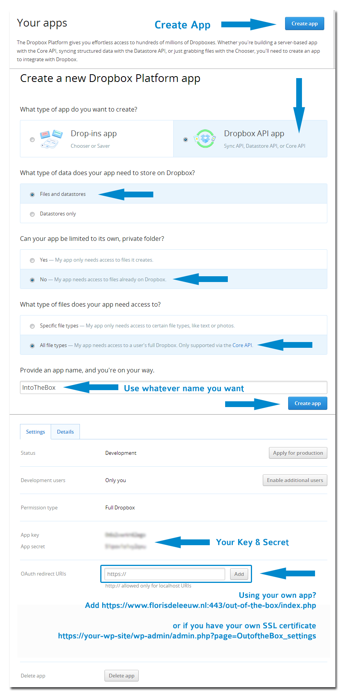
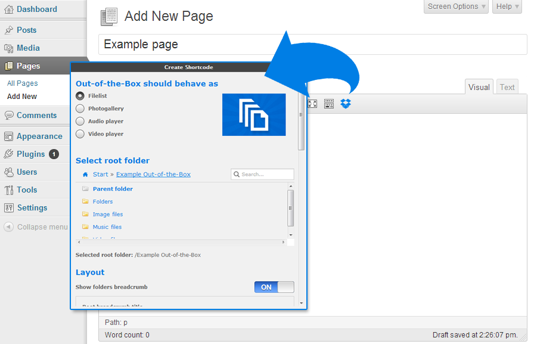

Out-of-the-Box (1.5)
Use your Dropbox in WordPress
View, add, delete, rename files & pictures and stream your favorite music and video’s directly from Dropbox
File browser
-
View Dropbox folders & files directly on your site
-
Upload form so users can upload (multiple) files to Dropbox
-
Add, delete and rename files & folders
-
Download files as zip file
-
Search your Dropbox for files & folders
-
If needed you can restrict users so they are only able to use their 'own' Dropbox folder
Gallery
-
Great looking grid with lightbox
-
With or without cropping
-
Folder thumbnails shows whats inside the folder
-
Customize image row height
-
Shuffle images
-
Add, delete and rename images
-
Download images as zip file
Audio & Video
-
Streams audio files directly from your Dropbox with a HTML 5 audioplayer with flash-fallback
-
.m4a (AAC/H.264)
-
.oga (Vorbis/Theora)
-
.mp3
-
Streams video files directly from your Dropbox with a HTML 5 audioplayer with flash-fallback
-
.webmv (Vorbis/VP8)
-
.ogv (Vorbis/Theora)
-
.m4v (AAC/H.264) (always supply a m4v file for cross-browser support)
-
.mp4 (supports most mp4 files)
General
-
Sort files by name, size or modified date
-
Restrict viewing by file extension and file or folder name
-
Restrict uploading files by file extension
-
Restrict which user can see, download, rename or delete your files or upload new ones. You can set the required roles by yourself
-
Secure OAuth 2 authentication
-
Powerful but intuitive shortcode generator
-
WordPress Multi-Site supported
-
Multi language supported
-
Auto-updater
-
And finally... All elements are responsive!
Install Out-of-the-box
-
Upload the contents of the zip file to wp-content/plugins/ and activate the plugin in your admin
panel
- Be sure that the cache directory is writeable. Otherwise your gallery and audio/video player will load very slowly each time.
- Authorize the App on the plugin settings page
- Out-of-the-Box is ready to use!
Use your own Dropbox App
If you don't trust our Dropbox App or if you would limit the permissions, you can create your own App on the
Dropbox website.
- Choose 'Dropbox API app' with 'Files and datastores' and full access.
- You decide if Out-of-the-Box needs to show all file types or specific ones.
- Use whatever name you need.

If you don't have a SSL certificate yet but you have your own IP and need one for free, try
Startssl.com. Follow their instructions how to install a SSL certificate.
- Get your Dropbox key & secret from the App Console and insert these values on the settings page of the Plugin and save these
- Follow (exactly) the instructions on the Out-of-the-Box Settings page
- Authorize the App on the plugin settings page
- Out-of-the-Box is ready to use!
You can use [outofthebox] in a page or post. It is possible to use it multiple times on the same page. You can use a lot of attributes to customize Out-of-the-Box on your blog. To make things easier for you, we added a Add Shortcode button in the MCE editor.

I get an 404 Invalid redirect_uri when using my own App
Did you exactly follow the instructions? This error suggest you didn't exactly added the given url on the Plugin Settings page to the OAuth redirect URIs in the App console
Why doesn't the shortcode generator insert any shortcode?
Download the latest version of Out-of-the-Box. Earlier versions may have some problems with your theme or plugins.
Why can't I select a folder in the shortcode generator?
Is Out-of-the-Box succesfully linked to your Dropbox account? If this isn't the case read the installation instructions how to reauthorize Out-of-the-Box. If the issue still exists, download the latest version of Out-of-the-Box. Earlier versions may have some problems with your theme or plugins.
I want each user to have its own folder, is that possible?
Of course. In the shortcode generator enable the Upload option. Under 'User management' you can enable 'Users can only use their own folder within the selected root folder'. This will create a unique folder in your selected Root folder if a user visits an Out-of-the-Box page. If guests should be able to upload files, be sure 'Guest' is selected under 'User management'-'Upload files'
To control the user folders behavior, look at the 'Advanced settings' on the Plugin settings page.
If I download a file its filename isn't complete or its missing a extension.
Download the latest version of Out-of-the-Box. Earlier versions have some problems in Firefox or IE with filenames.
My gallery isn't loading any images, what's wrong?
Out-of-the-Box creates all thumbnail files on a first visit. If you have a lot of images, this can take a while (around ~2 sec/image depending of your host). So have some patience the first time you load the gallery.
Are there any usage limits?
If you want to download or stream music with Out-of-the-Box, you will stream the files directly from Dropbox. So there are no bandwidth or file size issues for your web host. Only when you download zip files, these files will be downloaded to your site and can generate some traffic.
Dropbox API uses its own bandwidth limits. For Free accounts, the total amount of traffic that all of your links together can generate without getting banned is 20 GB per day. For Pro and Business accounts, the limit is 200 GB per day.
So if you have a lot of visitors and you have plans to use large video's or have loads of images, you should probably upgrade to a Business account.
How do I increase the upload limit?
Out-of-the-Box uses the max size limit set on your server. It looks at the PHP settings post_max_size & upload_max_filesize to determine this. However almost all hosting providers give chance to customize this default configuration by override php.ini or .htaccess. To increase your upload limit try one of these suggestions.
Why has Out-of-the-Box a different layout on my site?
Perhaps your theme CSS is interfering with the plugin.
How do I change the look Out-of-the-Box?
The same way you would change the look of anything else on your site: CSS. Out-of-the-Box uses its own basic stylesheet. You can copy this to your theme's directory and add additional styling there or simply add additional styling to your theme's stylesheet.
I have another question, what should I do?
First check the comment section on CodeCanyon, perhaps your question is already answered. If you have a simple question or a feature suggestion post it in the comment section of the plugin. If you have a problems integrating the plugin on your website, send me an email. Before you do so, be sure you have the latest version installed.
= 1.5 (18 Februari 14) =
-
Added inline embedded preview (Uses Google Doc viewer)
-
Added 'show more' button for Gallery
-
Added simple browser cache
-
Improved layout
-
Bug fix upload function
-
Bug fix CSS dropdown menu
= 1.4.3 (11 Februari 14) =
-
Bug fix foldernames
-
Bug fix authorization
= 1.4.2 (13 Januari 14) =
= 1.4.1 (8 Januari 14) =
-
Bug fix encryption SSL connection Dropbox API
-
Bug fix Insert Links MCE editor
= 1.4 (7 Januari 14) =
-
Added email notification on download/upload
-
Added mp4 support mediaplayer
-
Added include attribute in Shortcode Generator
-
Added direct links in MCE editor
-
Added Auto-Updater
-
Improved cache/thumbnails for large galleries
-
Bug fix fullscreen mediaplayer
-
Bug fix Lightbox gallery
-
Bug fix upload buttons
-
Several small bug fixes
= 1.3.2 (29 November 13) =
-
Don't need to create your own Dropbox App anymore
-
Added Multi-Site support
-
Added new permissions:
-
renamerole=> renamefoldersrole, renamefilesrole
-
deleterole=> deletefoldersrole, deletefilesrole
-
Bug fix upload function
-
Bug fix zipping multiple files
-
Bug fix CSS
= 1.3.1 (22 November 13) =
-
Added overlay for images or PDF files
-
Added some extra options to the Shortcode Generator
-
Bug fixes Gallery
-
Bug fix renaming folders
= 1.3 (2 November 13) =
-
Added zip functionality, choose which files you would like to download or download all files at once
-
Added shortlinks functionality
-
Improved user folders functionality
-
Improved thumbnail function
-
Improved plugin settings page
-
Bug fix shortcode generator
-
Bug fix filenames file browser
-
Bug fix downloading files
= 1.2.2 (14 Oktober 13) =
-
Critical security bug fixed
-
Replaced WordPress Capabilities with Roles. Replaced the following shortcode attributes and their possible values:
-
viewcapability => viewrole
-
downloadcapability => downloadrole
-
uploadcapability => uploadrole
-
renamecapability => renamerole
-
deletecapability => deleterole
-
addfoldercapability => addfolderrole
= 1.2.1 (11 Oktober 13) =
-
Improved Gallery with nice grid. Resizing is done with WordPress own image editor. If WordPress can't resize the image, Dropbox own thumbnail will be used.
-
Added image shuffle
= 1.2 (9 Oktober 13) =
-
Added sort function and sortable columns to the file browser
-
Added search function
-
Improved breadcrumb
-
Reworked video and audio player skin and added responsiveness.
-
Updated shortcode generator
= 1.1.4 (7 Oktober 13) =
-
Critical bug fix uploading files to Dropbox
-
Multiple fixes involving adding/renaming/deleting of files and folders
-
Improved file browsing
-
Removed sessions for Out-of-the-Box information
-
Added some CSS
= 1.1.3 (25 September 13) =
-
Bug fix ‘addfolder’ parameter in shortcode gallery
= 1.1.2 (21 September 13) =
-
Bug fix location cache files
= 1.1.1 (19 September 13) =
-
Improved admin interface
-
Replaced file upload temp directory with WordPress own
-
You can use Out-of-the-Box without SSL-certificate now
= 1.1 (17 September 13) =
-
Added a HTML5 audio/video player with flash-fallback
-
Added gallery
= 1.0 (10 September 13) =
I spent a lot of time on this thing. Nevertheless it's still not finished. I like to improve it wherever I can and appreciate your feedback. I'd be glad to help you if you have any questions relating to this plugin. No guarantees, but I'll do my best to assist.